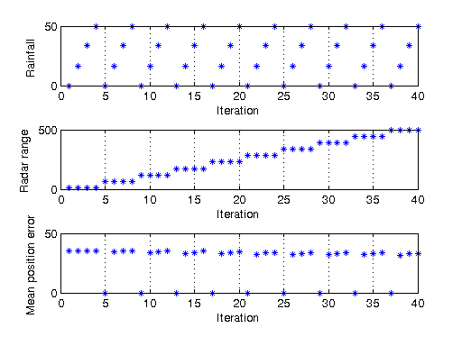

Sequential Air Traffic Control Radar Simulation
This demo performs a conceptual air traffic control radar simulation based on the radar range equation. The simulation varies radar range and rainfall amount, then calculates the difference between the actual and the estimated aircraft position.
For details about the computations, you can view the code for pctdemo_setup_aero_atc and open the aero_atc model.
Prerequisites:
Related demos:
Contents
Load the Demo Settings and the Data
We start by getting the demo difficulty level. If you want to use a different demo difficulty level, use paralleldemoconfig and then run this demo again. See Customizing the Settings for the Demos in the Parallel Computing Toolbox for full details.
difficulty = pctdemo_helper_getDefaults();
We obtain all the input parameters for our simulation from pctdemo_setup_aero_atc. The rainfall and radar range are vectors of equal length, and their length is determined by the demo difficulty level. For all i in 1:numel(in_rainfall(i)), we want to calculate
pctdemo_task_aero_atc(in_rainfall(i), in_Rrange(i))
You can view the code for pctdemo_setup_aero_atc for full details.
[figHandles, iters, in_rainfall, in_Rrange] = ...
pctdemo_setup_aero_atc(difficulty);
Run the Simulation
The pctdemo_task_aero_atc function is vectorized, and so we can calculate all the function values pctdemo_task_aero_atc(in_rainfall(i), in_Rrange(i)) in one function call. The fact that the function is vectorized will make it easier to distribute these computations. You can view the code for pctdemo_task_aero_atc for full details.
startTime = clock; meanRrange = pctdemo_task_aero_atc(in_rainfall, in_Rrange);
Measure the Elapsed Time
The time used for the sequential computations should be compared against the time it takes to perform the same set of calculations using the Parallel Computing Toolbox in the Distributed Air Traffic Control Radar Simulation demo. The elapsed time varies with the underlying hardware.
elapsedTime = etime(clock, startTime);
fprintf('Elapsed time is %2.1f seconds\n', elapsedTime);
Elapsed time is 155.8 seconds
Plot the Results
We create a simple graph depicting the difference between the actual and the estimated aircraft position. The initialization function set up the graph, now it is time to make it visible and update it with the results we have just calculated. You can view the code for pctdemo_plot_aero_atc for full details.
[setup, update] = pctdemo_plot_aero_atc(); update(figHandles, iters, in_rainfall, in_Rrange, meanRrange);